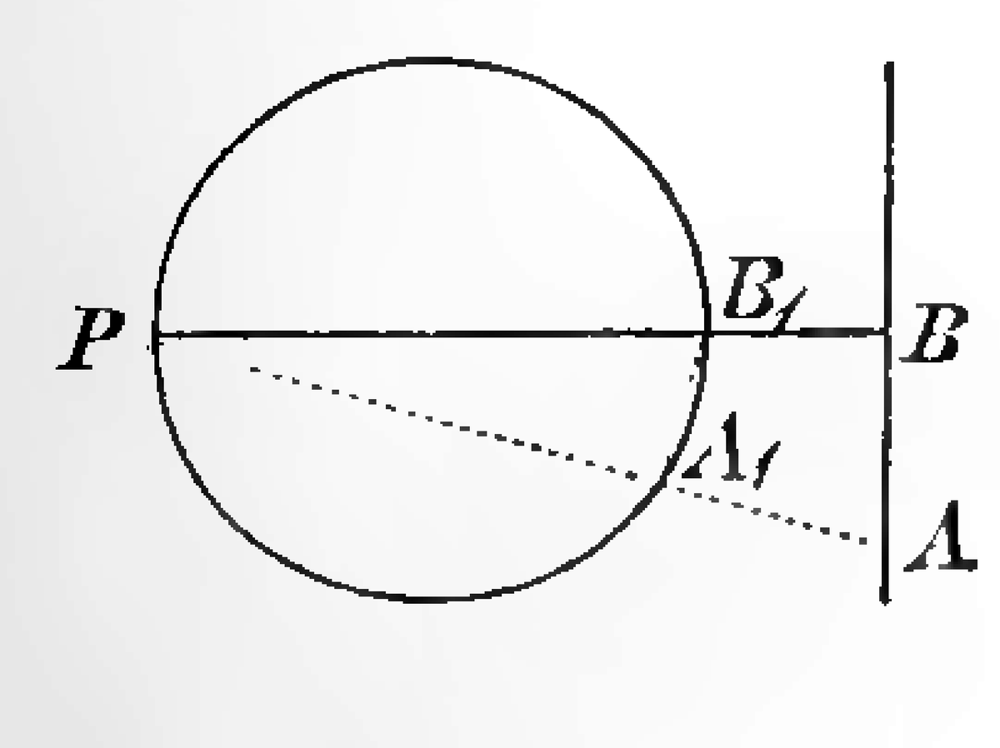
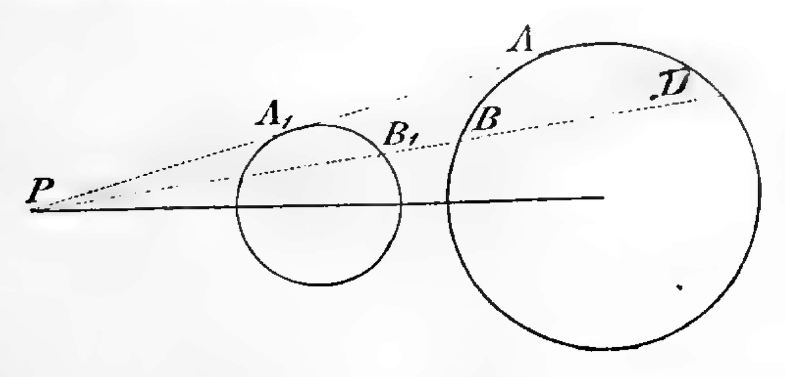

Section 4: Inverse Figures¶
Julius Petersen — Methods and Theories (Authorized Translation by Sophus Haagensen, 1879 · pp. 34–38)
Inverse Figures (pp. 34–38, Problems 192–201)¶
[pp. 33–36] Let a fixed point \(P\) (the centre of inversion) and a constant positive product \(I\) (the power of inversion) be chosen. If on every ray through \(P\) we associate to each point \(A \neq P\) the point \(A_1\) satisfying
then as \(A\) traces a curve \(k\), \(A_1\) traces its inverse curve \(k_1\). From this definition follow four foundational theorems (pp. 33–36):
f. 0051 · p. 35Circle Through the Centre (p. 34): The inverse curve of a circle passing through the centre of inversion is a straight line perpendicular to the diameter through \(P\) (and conversely, the inverse of any straight line not passing through \(P\) is a circle through \(P\)).

Archival woodcut plate (1879, f. 0051, p. 35): Inverse of a straight line is a circle through P. Circle Not Through the Centre (p. 34): The inverse curve of a circle not passing through \(P\) is another circle, and \(P\) is a centre of similitude of both circles. In particular, if \(I\) equals the tangent power of \(P\) with respect to the given circle, that circle is its own inverse!

Archival woodcut plate (1879, f. 0051, p. 35): Inverse of a circle not through P is a homothetic circle. Preservation of Contact (p. 35, a): If two curves intersect or touch each other at \(A \neq P\), their inverse curves intersect or touch each other at the corresponding point \(A_1\).
Conformality (pp. 35–36, b): If two curves intersect at \(A\) forming a certain angle, their inverse curves intersect at \(A_1\) forming the same angle (with opposite orientation).


Figure 7.1 — Petersen’s Problem 199 (p. 36): Circle Touching Three Concurrent Circles via Circle Inversion. Given three circles M1O, M2O, M3O concurrent at O, inversion in OR0 (\(\Omega\)) transforms all three circles into straight lines bounding \(\triangle V_1 V_2 V_3\). Constructing its incircle JpT1p (\(\omega'\)) and inverting contact points T1p, T2p, T3p back to T1, T2, T3 determines exact tangent circle JT1 (\(\omega\), radius 27).
Problem 197 (p. 36): Construct a circle passing through a given point \(P\) and touching two given circles. Inverting from \(P\) reduces the sought circle to a common tangent of the two inverted circles (and \(I\) may be chosen equal to the power of \(P\) with respect to one given circle so that circle remains unaltered!).
Problem 199 (p. 36): Construct a circle touching three given circles, which all pass through the same point \(O\). Inverting from \(O\) transforms the three given circles into three straight lines; the inscribed and escribed circles of that triangle invert into the four tangent solution circles!
Problems 200–201 — Castillon’s Problem (pp. 36–37): In a given circle to inscribe a quadrilateral (or triangle), each side of which passes through a given point — solved by composing successive inversions in the given points using their powers with respect to the given circle!